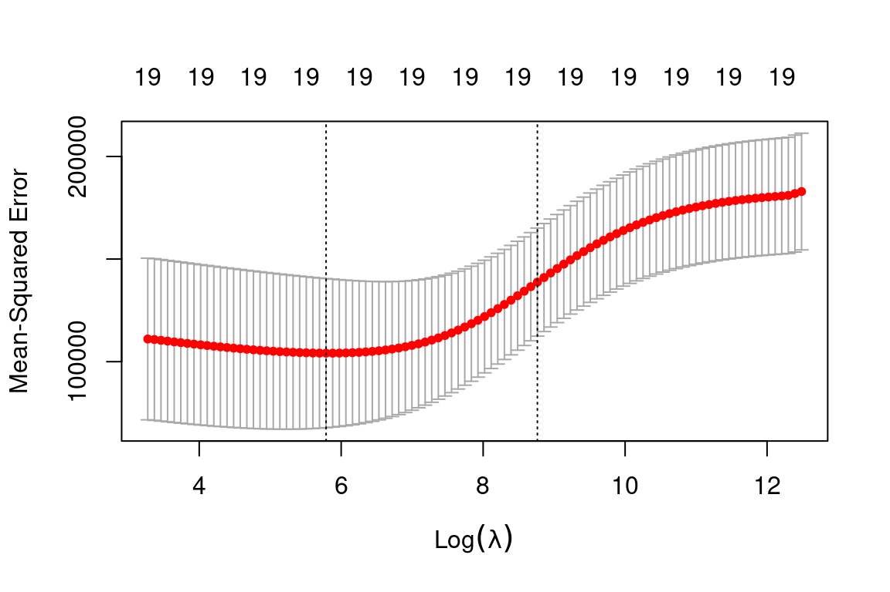
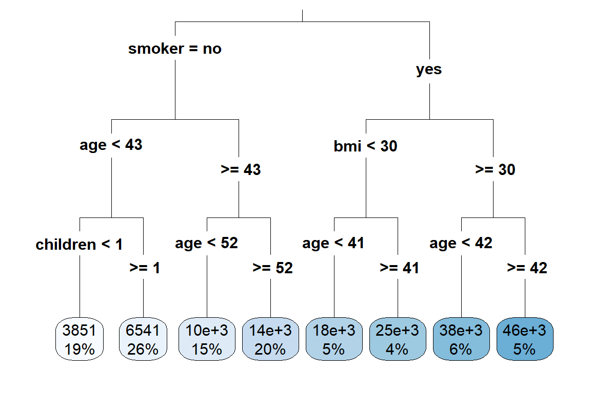
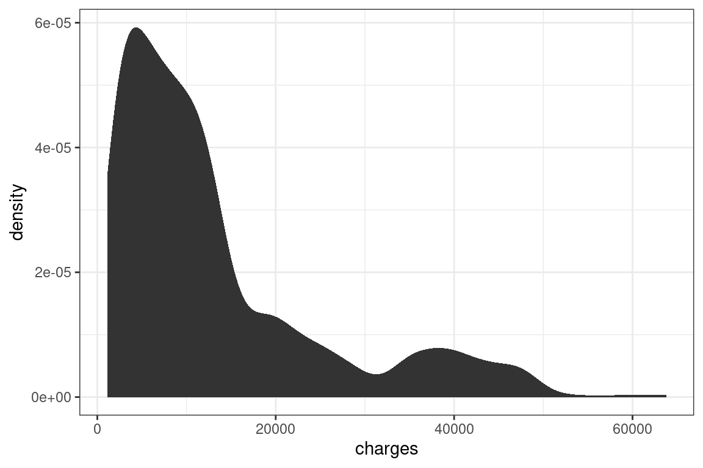

13 GLM variable selection
Predictive Analytics is about using results to solve business problems. Complex models are almost useless if they cannot be explained. In this chapter, we will learn how to make GLMs easier to explain by either removing variables entirely or lessening their impact.
13.1 Stepwise subset selection
In theory, we could test all possible combinations of variables and interaction terms. This includes all \(p\) models with one predictor, all p-choose-2 models with two predictors, all p-choose-3 models with three predictors, and so forth. Then we take whichever model has the best performance as the final model.
This “brute force” approach is statistically ineffective: the more variables which are searched, the higher the chance of finding models that over fit.
A subtler method, known as stepwise selection, reduces the chances of over-fitting by only looking at the most promising models.
Forward Stepwise Selection:
- Start with no predictors in the model;
- Evaluate all \(p\) models which use only one predictor and choose the one with the best performance (highest \(R^2\) or lowest \(\text{RSS}\));
- Repeat the process when adding one additional predictor, and continue until there is a model with one predictor, a model with two predictors, a model with three predictors, and so forth until there are \(p\) models;
- Select the single best model which has the best \(\text{AIC}\),\(\text{BIC}\), or adjusted \(R^2\).
Backward Stepwise Selection:
- Start with a model that contains all predictors;
- Create a model which removes all predictors;
- Choose the best model which removes all-but-one predictor;
- Choose the best model which removes all-but-two predictors;
- Continue until there are \(p\) models;
- Select the single best model which has the best \(\text{AIC}\),\(\text{BIC}\), or adjusted \(R^2\).
Both Forward & Backward Selection:
A hybrid approach is to consider use both forward and backward selection. This is done by creating two lists of variables at each step, one from forward and one from backward selection. Then variables from both lists are tested to see if adding or subtracting from the current model would improve the fit or not. ISLR does not mention this directly, however, by default the stepAIC function uses a default of both.
Tip: Always load the
MASSlibrary beforedplyrortidyverse. Otherwise there will be conflicts as there are functions namedselect()andfilter()in both. Alternatively, specify the library in the function call withdplyr::select().
| Readings | |
|---|---|
| CAS Monograph 5 Chapter 2 |
13.2 Example: SOA PA 6/12/19, Task 6
Already enrolled? Watch the full video: Practice Exams | Practice Exams + Lessons
AIC and BIC are among the available techniques for feature selection. Briefly describe them and outline the differences in the two criteria. Make a recommendation as to which one should be used for this problem. Use only your recommended criterion when completing this task.
Some of the features may lack predictive power and lead to overfitting. Determine which features should be retained. Use the stepAIC function (from the MASS package) to make this determination. When using this function, there are two decisions to make. Make each decision based on the business problem. Use ?stepAIC to learn more about these parameters (note that the MASS package must be loaded before help on this function can be accessed).
Use direction = “backward” or direction = “forward” Use AIC (k = 2) or BIC (k=log(nrow(train)))
13.3 Penalized Linear Models
One of the main weaknesses of the GLM, including all linear models in this chapter, is that the features need to be selected by hand. Stepwise selection helps to improve this process, but fails when the inputs are correlated and often has a strong dependence on seemingly arbitrary choices of evaluation metrics such as using AIC or BIC and forward or backward directions.
The Bias Variance Trade-off is about finding the lowest error by changing the flexibility of the model. Penalization methods use a parameter to control for this flexibility directly.
Earlier on we said that the linear model minimizes the sum of square terms, known as the residual sum of squares (RSS)
\[ \text{RSS} = \sum_i(y_i - \hat{y})^2 = \sum_i(y_i - \beta_0 - \sum_{j = 1}^p\beta_j x_{ij})^2 \]
This loss function can be modified so that models which include more (and larger) coefficients are considered as worse. In other words, when there are more \(\beta\)’s, or \(\beta\)’s which are larger, the RSS is higher.
13.4 Ridge Regression
Ridge regression adds a penalty term which is proportional to the square of the sum of the coefficients. This is known as the “L2” norm.
\[ \sum_i(y_i - \beta_0 - \sum_{j = 1}^p\beta_j x_{ij})^2 + \lambda \sum_{j = 1}^p\beta_j^2 \]
This \(\lambda\) controls how much of a penalty is imposed on the size of the coefficients. When \(\lambda\) is high, simpler models are treated more favorably because the \(\sum_{j = 1}^p\beta_j^2\) carries more weight. Conversely, then \(\lambda\) is low, complex models are more favored. When \(\lambda = 0\), we have an ordinary GLM.
13.5 Lasso
The official name is the Least Absolute Shrinkage and Selection Operator, but the common name is just “the lasso.” Just as with Ridge regression, we want to favor simpler models; however, we also want to select variables. This is the same as forcing some coefficients to be equal to 0.
Instead of taking the square of the coefficients (L2 norm), we take the absolute value (L1 norm).
\[ \sum_i(y_i - \beta_0 - \sum_{j = 1}^p\beta_j x_{ij})^2 + \lambda \sum_{j = 1}^p|\beta_j| \]
In ISLR, Hastie et al show that this results in coefficients being forced to be exactly 0. This is extremely useful because it means that by changing \(\lambda\), we can select how many variables to use in the model.
Note: While any response family is possible with penalized regression, in R, only the Gaussian family is possible in the library glmnet, and so this is the only type of question that the SOA can ask.
13.6 Elastic Net
The Elastic Net uses a penalty term which is between the L1 and L2 norms. The penalty term is a weighted average using the mixing parameter \(0 \leq \alpha \leq 1\). The loss function is then
\[\text{RSS} + (1 - \alpha) \sum_{j = 1}^{p}\beta_j^2 + \alpha \sum_{j = 1}^p |\beta_j|\] When \(\alpha = 1\), the model is known as the Lasso, and when \(\alpha = 0\), the model is known as Ridge Regression.
Luckily, none of this needs to be memorized. On the exam, read the documentation in R to refresh your memory. For the Elastic Net, the function is glmnet, and so running ?glmnet will give you this info.
Shortcut: When using complicated functions on the exam, use
?function_nameto get the documentation.
13.7 Advantages and disadvantages
Elastic Net/Lasso/Ridge Advantages
- All benefits from GLMS
- Automatic variable selection for Lasso; smaller coefficients for Ridge
- Better predictive power than GLM
Elastic Net/Lasso/Ridge Disadvantages
- All cons of GLMs
| Readings | |
|---|---|
| ISLR 6.1 Subset Selection | |
| ISLR 6.2 Shrinkage Methods |
13.8 Example: Ridge Regression
We will use the glmnet package in order to perform ridge regression and
the lasso. The main function in this package is glmnet(), which can be used
to fit ridge regression models, lasso models, and more. This function has
slightly different syntax from other model-fitting functions that we have
encountered thus far in this book. In particular, we must pass in an \(x\)
matrix as well as a \(y\) vector, and we do not use the \(y \sim x\) syntax.
Before proceeding, let’s first ensure that the missing values have been removed from the data, as described in the previous lab.
Hitters = na.omit(Hitters)We will now perform ridge regression and the lasso in order to predict Salary on
the Hitters data. Let’s set up our data:
x = model.matrix(Salary~., Hitters)[,-1] # trim off the first column
# leaving only the predictors
y = Hitters %>%
select(Salary) %>%
unlist() %>%
as.numeric()The model.matrix() function is particularly useful for creating \(x\); not only
does it produce a matrix corresponding to the 19 predictors but it also
automatically transforms any qualitative variables into dummy variables.
The latter property is important because glmnet() can only take numerical,
quantitative inputs.
The glmnet() function has an alpha argument that determines what type
of model is fit. If alpha = 0 then a ridge regression model is fit, and if alpha = 1
then a lasso model is fit. We first fit a ridge regression model:
grid = 10^seq(10, -2, length = 100)
ridge_mod = glmnet(x, y, alpha = 0, lambda = grid)By default the glmnet() function performs ridge regression for an automatically
selected range of \(\lambda\) values. However, here we have chosen to implement
the function over a grid of values ranging from \(\lambda = 10^10\) to \(\lambda = 10^{-2}\), essentially covering the full range of scenarios from the null model containing
only the intercept, to the least squares fit.
As we will see, we can also compute
model fits for a particular value of \(\lambda\) that is not one of the original
grid values. Note that by default, the glmnet() function standardizes the
variables so that they are on the same scale. To turn off this default setting,
use the argument standardize = FALSE.
Associated with each value of \(\lambda\) is a vector of ridge regression coefficients,
stored in a matrix that can be accessed by coef(). In this case, it is a \(20 \times 100\)
matrix, with 20 rows (one for each predictor, plus an intercept) and 100
columns (one for each value of \(\lambda\)).
dim(coef(ridge_mod))## [1] 20 100We expect the coefficient estimates to be much smaller, in terms of \(l_2\) norm, when a large value of \(\lambda\) is used, as compared to when a small value of \(\lambda\) is used. These are the coefficients when \(\lambda = 11498\), along with their \(l_2\) norm:
ridge_mod$lambda[50] #Display 50th lambda value## [1] 11497.57coef(ridge_mod)[,50] # Display coefficients associated with 50th lambda value## (Intercept) AtBat Hits HmRun Runs RBI Walks
## 407.356050200 0.036957182 0.138180344 0.524629976 0.230701523 0.239841459 0.289618741
## Years CAtBat CHits CHmRun CRuns CRBI CWalks
## 1.107702929 0.003131815 0.011653637 0.087545670 0.023379882 0.024138320 0.025015421
## LeagueN DivisionW PutOuts Assists Errors NewLeagueN
## 0.085028114 -6.215440973 0.016482577 0.002612988 -0.020502690 0.301433531sqrt(sum(coef(ridge_mod)[-1,50]^2)) # Calculate l2 norm## [1] 6.360612In contrast, here are the coefficients when \(\lambda = 705\), along with their \(l_2\) norm. Note the much larger \(l_2\) norm of the coefficients associated with this smaller value of \(\lambda\).
ridge_mod$lambda[60] #Display 60th lambda value## [1] 705.4802coef(ridge_mod)[,60] # Display coefficients associated with 60th lambda value## (Intercept) AtBat Hits HmRun Runs RBI Walks
## 54.32519950 0.11211115 0.65622409 1.17980910 0.93769713 0.84718546 1.31987948
## Years CAtBat CHits CHmRun CRuns CRBI CWalks
## 2.59640425 0.01083413 0.04674557 0.33777318 0.09355528 0.09780402 0.07189612
## LeagueN DivisionW PutOuts Assists Errors NewLeagueN
## 13.68370191 -54.65877750 0.11852289 0.01606037 -0.70358655 8.61181213sqrt(sum(coef(ridge_mod)[-1,60]^2)) # Calculate l2 norm## [1] 57.11001We can use the predict() function for a number of purposes. For instance,
we can obtain the ridge regression coefficients for a new value of \(\lambda\), say 50:
predict(ridge_mod, s=50, type="coefficients")[1:20,]## (Intercept) AtBat Hits HmRun Runs RBI Walks
## 4.876610e+01 -3.580999e-01 1.969359e+00 -1.278248e+00 1.145892e+00 8.038292e-01 2.716186e+00
## Years CAtBat CHits CHmRun CRuns CRBI CWalks
## -6.218319e+00 5.447837e-03 1.064895e-01 6.244860e-01 2.214985e-01 2.186914e-01 -1.500245e-01
## LeagueN DivisionW PutOuts Assists Errors NewLeagueN
## 4.592589e+01 -1.182011e+02 2.502322e-01 1.215665e-01 -3.278600e+00 -9.496680e+00We now split the samples into a training set and a test set in order to estimate the test error of ridge regression and the lasso.
set.seed(1)
train = Hitters %>%
sample_frac(0.5)
test = Hitters %>%
setdiff(train)
x_train = model.matrix(Salary~., train)[,-1]
x_test = model.matrix(Salary~., test)[,-1]
y_train = train %>%
select(Salary) %>%
unlist() %>%
as.numeric()
y_test = test %>%
select(Salary) %>%
unlist() %>%
as.numeric()Next we fit a ridge regression model on the training set, and evaluate
its MSE on the test set, using \(\lambda = 4\). Note the use of the predict()
function again: this time we get predictions for a test set, by replacing
type="coefficients" with the newx argument.
ridge_mod = glmnet(x_train, y_train, alpha=0, lambda = grid, thresh = 1e-12)
ridge_pred = predict(ridge_mod, s = 4, newx = x_test)
mean((ridge_pred - y_test)^2)## [1] 139858.6The test MSE is 101242.7. Note that if we had instead simply fit a model with just an intercept, we would have predicted each test observation using the mean of the training observations. In that case, we could compute the test set MSE like this:
mean((mean(y_train) - y_test)^2)## [1] 224692.1We could also get the same result by fitting a ridge regression model with
a very large value of \(\lambda\). Note that 1e10 means \(10^{10}\).
ridge_pred = predict(ridge_mod, s = 1e10, newx = x_test)
mean((ridge_pred - y_test)^2)## [1] 224692.1So fitting a ridge regression model with \(\lambda = 4\) leads to a much lower test MSE than fitting a model with just an intercept. We now check whether there is any benefit to performing ridge regression with \(\lambda = 4\) instead of just performing least squares regression. Recall that least squares is simply ridge regression with \(\lambda = 0\).
* Note: In order for glmnet() to yield the exact least squares coefficients when \(\lambda = 0\),
we use the argument exact=T when calling the predict() function. Otherwise, the
predict() function will interpolate over the grid of \(\lambda\) values used in fitting the
glmnet() model, yielding approximate results. Even when we use exact = T, there remains
a slight discrepancy in the third decimal place between the output of glmnet() when
\(\lambda = 0\) and the output of lm(); this is due to numerical approximation on the part of
glmnet().
ridge_pred = predict(ridge_mod, s = 0, x = x_train, y = y_train, newx = x_test, exact = T)
mean((ridge_pred - y_test)^2)## [1] 175051.7lm(Salary~., data = train)##
## Call:
## lm(formula = Salary ~ ., data = train)
##
## Coefficients:
## (Intercept) AtBat Hits HmRun Runs RBI Walks
## 2.398e+02 -1.639e-03 -2.179e+00 6.337e+00 7.139e-01 8.735e-01 3.594e+00
## Years CAtBat CHits CHmRun CRuns CRBI CWalks
## -1.309e+01 -7.136e-01 3.316e+00 3.407e+00 -5.671e-01 -7.525e-01 2.347e-01
## LeagueN DivisionW PutOuts Assists Errors NewLeagueN
## 1.322e+02 -1.346e+02 2.099e-01 6.229e-01 -4.616e+00 -8.330e+01predict(ridge_mod, s = 0, x = x_train, y = y_train, exact = T, type="coefficients")[1:20,]## (Intercept) AtBat Hits HmRun Runs RBI Walks
## 239.83274953 -0.00175359 -2.17853087 6.33694957 0.71369687 0.87329878 3.59421378
## Years CAtBat CHits CHmRun CRuns CRBI CWalks
## -13.09231408 -0.71351092 3.31523605 3.40701392 -0.56709530 -0.75240961 0.23467433
## LeagueN DivisionW PutOuts Assists Errors NewLeagueN
## 132.15949536 -134.58503816 0.20992473 0.62288126 -4.61583857 -83.29432536It looks like we are indeed improving over regular least-squares! Side note: in general, if we want to fit a (unpenalized) least squares model, then
we should use the lm() function, since that function provides more useful
outputs, such as standard errors and \(p\)-values for the coefficients.
Instead of arbitrarily choosing \(\lambda = 4\), it would be better to
use cross-validation to choose the tuning parameter \(\lambda\). We can do this using
the built-in cross-validation function, cv.glmnet(). By default, the function
performs 10-fold cross-validation, though this can be changed using the
argument folds. Note that we set a random seed first so our results will be
reproducible, since the choice of the cross-validation folds is random.
set.seed(1)
cv.out = cv.glmnet(x_train, y_train, alpha = 0) # Fit ridge regression model on training data
plot(cv.out) # Draw plot of training MSE as a function of lambda
bestlam = cv.out$lambda.min # Select lamda that minimizes training MSE
bestlam## [1] 326.1406Therefore, we see that the value of \(\lambda\) that results in the smallest cross-validation error is 339.1845 What is the test MSE associated with this value of \(\lambda\)?
ridge_pred = predict(ridge_mod, s = bestlam, newx = x_test) # Use best lambda to predict test data
mean((ridge_pred - y_test)^2) # Calculate test MSE## [1] 140056.2This represents a further improvement over the test MSE that we got using \(\lambda = 4\). Finally, we refit our ridge regression model on the full data set, using the value of \(\lambda\) chosen by cross-validation, and examine the coefficient estimates.
out = glmnet(x, y, alpha = 0) # Fit ridge regression model on full dataset
predict(out, type = "coefficients", s = bestlam)[1:20,] # Display coefficients using lambda chosen by CV## (Intercept) AtBat Hits HmRun Runs RBI Walks
## 15.44835008 0.07716945 0.85906253 0.60120339 1.06366687 0.87936073 1.62437580
## Years CAtBat CHits CHmRun CRuns CRBI CWalks
## 1.35296287 0.01134998 0.05746377 0.40678422 0.11455696 0.12115916 0.05299953
## LeagueN DivisionW PutOuts Assists Errors NewLeagueN
## 22.08942749 -79.03490973 0.16618830 0.02941513 -1.36075644 9.12528398As expected, none of the coefficients are exactly zero - ridge regression does not perform variable selection!
13.9 Example: The Lasso
We saw that ridge regression with a wise choice of \(\lambda\) can outperform least
squares as well as the null model on the Hitters data set. We now ask
whether the lasso can yield either a more accurate or a more interpretable
model than ridge regression. In order to fit a lasso model, we once again
use the glmnet() function; however, this time we use the argument alpha=1.
Other than that change, we proceed just as we did in fitting a ridge model:
lasso_mod = glmnet(x_train, y_train, alpha = 1, lambda = grid) # Fit lasso model on training data
plot(lasso_mod) # Draw plot of coefficients
Notice that in the coefficient plot that depending on the choice of tuning parameter, some of the coefficients are exactly equal to zero. We now perform cross-validation and compute the associated test error:
set.seed(1)
cv.out = cv.glmnet(x_train, y_train, alpha = 1) # Fit lasso model on training data
plot(cv.out) # Draw plot of training MSE as a function of lambda
bestlam = cv.out$lambda.min # Select lamda that minimizes training MSE
lasso_pred = predict(lasso_mod, s = bestlam, newx = x_test) # Use best lambda to predict test data
mean((lasso_pred - y_test)^2) # Calculate test MSE## [1] 143273This is substantially lower than the test set MSE of the null model and of least squares, and very similar to the test MSE of ridge regression with \(\lambda\) chosen by cross-validation.
However, the lasso has a substantial advantage over ridge regression in that the resulting coefficient estimates are sparse. Here we see that 12 of the 19 coefficient estimates are exactly zero:
out = glmnet(x, y, alpha = 1, lambda = grid) # Fit lasso model on full dataset
lasso_coef = predict(out, type = "coefficients", s = bestlam)[1:20,] # Display coefficients using lambda chosen by CV
lasso_coef## (Intercept) AtBat Hits HmRun Runs RBI Walks
## 1.27429897 -0.05490834 2.18012455 0.00000000 0.00000000 0.00000000 2.29189433
## Years CAtBat CHits CHmRun CRuns CRBI CWalks
## -0.33767315 0.00000000 0.00000000 0.02822467 0.21627609 0.41713051 0.00000000
## LeagueN DivisionW PutOuts Assists Errors NewLeagueN
## 20.28190194 -116.16524424 0.23751978 0.00000000 -0.85604181 0.00000000Selecting only the predictors with non-zero coefficients, we see that the lasso model with \(\lambda\) chosen by cross-validation contains only seven variables:
lasso_coef[lasso_coef!=0] # Display only non-zero coefficients## (Intercept) AtBat Hits Walks Years CHmRun CRuns
## 1.27429897 -0.05490834 2.18012455 2.29189433 -0.33767315 0.02822467 0.21627609
## CRBI LeagueN DivisionW PutOuts Errors
## 0.41713051 20.28190194 -116.16524424 0.23751978 -0.85604181Practice questions:
- How do ridge regression and the lasso improve on simple least squares?
- In what cases would you expect ridge regression outperform the lasso, and vice versa?